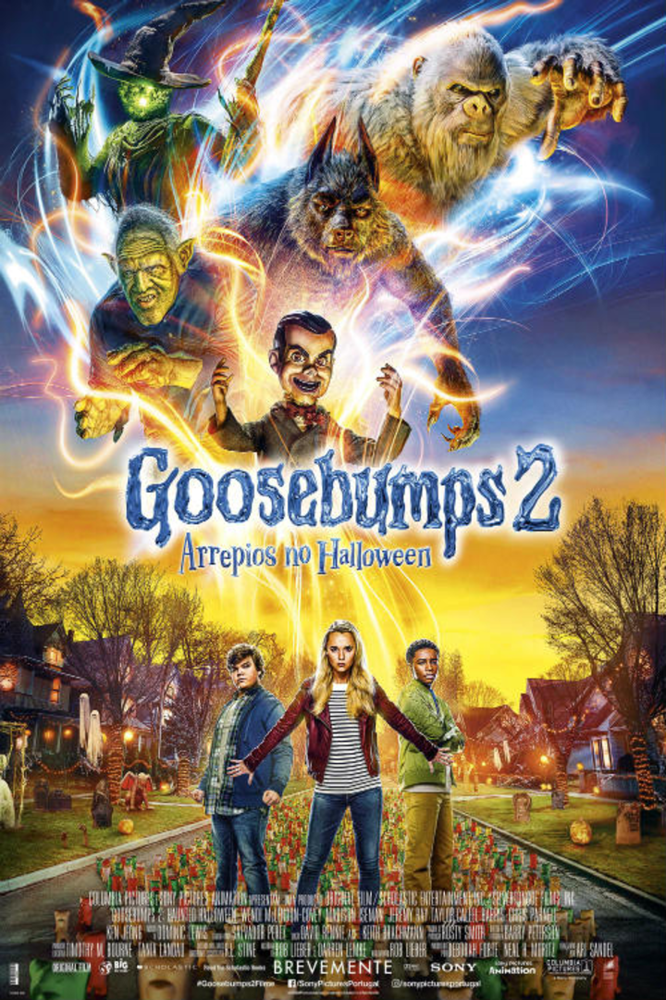
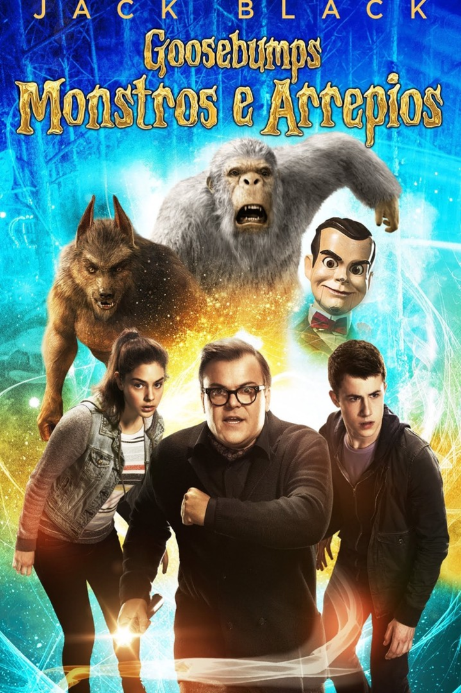

Sumário
Não recomendado para menores de 10 anos
O jovem Zach Cooper (Dylan Minnette) se muda de Nova York para uma cidade pequena dos Estados Unidos, para onde a mãe é transferida. Lá, eles passam a morar na casa ao lado da de Hannah (Odeya Rush) – por quem o adolescente se apaixona – e o pai, o ranzinza R. L. Stine (Jack Black). Depois de escutar gritos vindo da propriedade ao lado, Zach invade a residência com a ajuda do medroso colega (Ryan Lee) e acaba, acidentalmente, abrindo um dos livros e, consequentemente, dando início à libertação de todos os monstros criados por Stine. Juntos, eles terão que mandar as criaturas de volta para as prateleiras.
Fonte: Adoro Cinema
Não recomendado para menores de 9 anos
Wardenclyffe, Estados Unidos, às vésperas do Halloween. Sonny (Jeremy Ray Taylor) e Sam (Caleel Harris) são grandes amigos, que encontram um livro incompleto guardado dentro de um baú, em uma casa abandonada. Ao abri-lo, eles despertam o boneco Slappy (Avery Lee Jones), que surge inesperadamente. Criação do autor R.L. Stine (Jack Black), ele usa os jovens e ainda a irmã de Sonny, Sarah (Madison Iseman), para criar sua própria família de monstros.
Fonte: Adoro Cinema